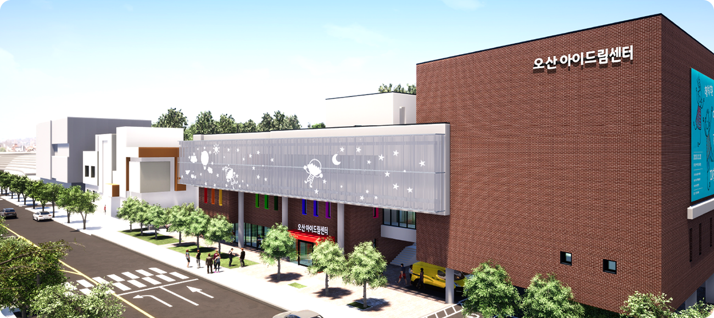

삼성전자 현악 동호회
사운드포스트 연주회
D-DAY
00h
00m
00s
2026. 03. 28 SAT 2 PM
오산아이드림극장
Greetings
2013년 사내 런치 클래스의 작은 떨림으로 시작한 사운드포스트가 일상과 예술을 잇는 든든한 '영혼의 기둥'으로 성장했습니다.
음악을 사랑하는 비전공 직장인들이 틈틈이 갈고닦은 순수한 열정의 선율이 오늘 가족과 이웃 여러분의 마음에 따뜻한 소통의 울림으로 닿기를 소망합니다.
바쁘신 중에도 저희의 음악 여행에 기꺼이 동행해 주신 관객 여러분께 진심으로 감사의 인사를 올립니다.
음악을 사랑하는 비전공 직장인들이 틈틈이 갈고닦은 순수한 열정의 선율이 오늘 가족과 이웃 여러분의 마음에 따뜻한 소통의 울림으로 닿기를 소망합니다.
바쁘신 중에도 저희의 음악 여행에 기꺼이 동행해 주신 관객 여러분께 진심으로 감사의 인사를 올립니다.
삼성전자 현악 동호회 사운드포스트 회장 정준희 드림
Profile
지휘 | 석민지
現 한양대학교 음악대학 재학
성신여대 '크리스탈' 지휘자
삼성전자 '사운드포스트' 지휘자
삼성전자 수원 MLD 강의 출강
前 '아람아트' 오케스트라 부지휘자
Vn.
지도 선생님 | 김이진, 노성은, 이현희
정준희, 남승수, 김경록, 김정한, 문지현, 박지혜, 박혜진, 박희철, 봉우리, 손성필, 윤성욱, 이민희, 이승복, 전요셉, 조경숙, 조진경, 최용환
정준희, 남승수, 김경록, 김정한, 문지현, 박지혜, 박혜진, 박희철, 봉우리, 손성필, 윤성욱, 이민희, 이승복, 전요셉, 조경숙, 조진경, 최용환
Va.
지도 선생님 | 송은서
정영교, 김정은, 김혜란, 변윤희, 한지훈
정영교, 김정은, 김혜란, 변윤희, 한지훈
Vc.
지도 선생님 | 박선욱
정미영, 손승우, 안한철, 유장선, 정해석, 주윤우, 최지영
정미영, 손승우, 안한철, 유장선, 정해석, 주윤우, 최지영
Staff 정지혜 선생님, 김선아, 성승민, 황성주
Program
Part 1
1. 언제나 몇 번이라도
Always With Me
Andante, Vivace
원곡 : 지브리 / 기무라 유미 | 편곡 : 석민지
2. 바람이 지나는 길
Path of The Wind
Andante, Vivace
원곡 : 지브리 / 히사이시 조 | 편곡 : 석민지
3. 또 다시
Spirited Away Reprise
Andante, Vivace
원곡 : 지브리 / 히사이시 조 | 편곡 : 석민지
4. 알라딘 메들리
Aladdin Medley
Andante, Vivace
원곡 : 디즈니 / 알란 멘켄 | 편곡 : 석민지
INTERMISSION
Part 2
1. 세인트 폴 모음곡
St. Paul's Suite
Vivace
작곡 : 구스타프 홀스트 (Gustav Holst)
2. 팔라디오
Palladio
Vivace
작곡 : 칼 젠킨스 (Karl Jenkins)
3. 장난감 교향곡
Kinder-Sinfonie
Andante, Vivace
작곡 : L. 모차르트 / J. 하이든 (L. Mozart / J. Haydn)
Information
💡 공연 전후 즐길 거리

건물 내에는 아이들을 위한 복합 문화 체험 공간이 마련되어 있습니다.
- 주요 시설: 테마 놀이터, 요리 체험실, 창의 놀이존
- 이용 대상: 18개월 ~ 9세 아동 및 보호자
- 팁: 사전 예약 권장 (공연 전후 가족 나들이 추천)